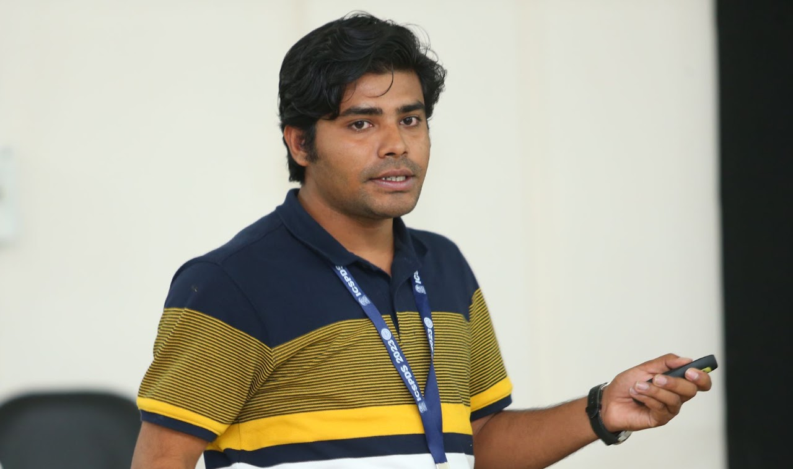

Survival Analysis
Methods for censored lifetime data, transformation models, cure and frailty structures, and modern computational approaches.
Statistics · Reliability · Survival
Assistant Professor, Department of Mathematics
Indian Institute of Technology Palakkad
I develop statistical methodology for survival and reliability data, with particular emphasis on robust inference, stochastic orders, and order-restricted inference.

Research themes
My work brings together probability, statistical inference, and reliability theory to study censoring, dependence, robustness, ageing, and constrained structure.
Methods for censored lifetime data, transformation models, cure and frailty structures, and modern computational approaches.
Coherent systems, redundancy allocation, component importance, ageing, and random weighted system structures.
Divergence-based estimation and testing procedures designed to remain stable under contamination and model misspecification.
Shape-constrained estimation and stochastic comparison of mixtures, systems, order statistics, and dependent lifetime models.
Current research projects
Ongoing work spans robust inference, modern survival modelling, shape constraints, and the reliability of complex systems.
Survival
Robust estimation and testing for censored lifetime data, with attention to restricted-time functionals and resistance to contamination.
Computation
Flexible predictive models for complex time-to-event data while retaining uncertainty quantification and interpretable lifetime summaries.
Constraints
Estimation and testing under hazard, cumulative-hazard, mean-residual-life, and related stochastic-order restrictions.
Systems
Performance measures, component allocation, ageing, and comparison for coherent and random weighted system structures.
Foundations
Stable estimators and test statistics developed through divergence measures, generalized likelihood ideas, and sample-spacing methods.
Selected publications
A short selection is shown here. The Publications page contains the complete chronological list.
2026
With N. K. Hazra and N. Balakrishnan · Annals of Operations Research
2026
With N. Misra and N. K. Hazra · Statistics
2026
With N. K. Hazra and M. Finkelstein · Probability in the Engineering and Informational Sciences
2025
With N. K. Hazra and N. Balakrishnan · Quality and Reliability Engineering International
2025
With N. K. Hazra and N. Balakrishnan · Annals of Operations Research
Recent updates
Invited talk at the Conference on Data-driven Statistical Decision Making, IIT Hyderabad.
Paper presentation at the International Conference on Mathematical Optimization Theory and Applications, IIT (BHU).
Three new papers in reliability, mixture comparison, and stochastic lifetime modelling.
Teaching
Course pages will collect syllabi, lecture notes, assignments, simulation code, references, and announcements as materials become available.
MA6610
Graduate inference, likelihood methods, asymptotics, testing, interval estimation, and simulation-based computation.
Course overview →Project / materials
Statistical methods for curves and functions, with connections to longitudinal, survival, and high-dimensional data.
Teaching materials →Undergraduate
Probability models, random variables, distributions, estimation, testing, and applications for data science.
Course overview →Contact
Department of Mathematics, IIT Palakkad, Kanjikkode, Kerala 678623, India